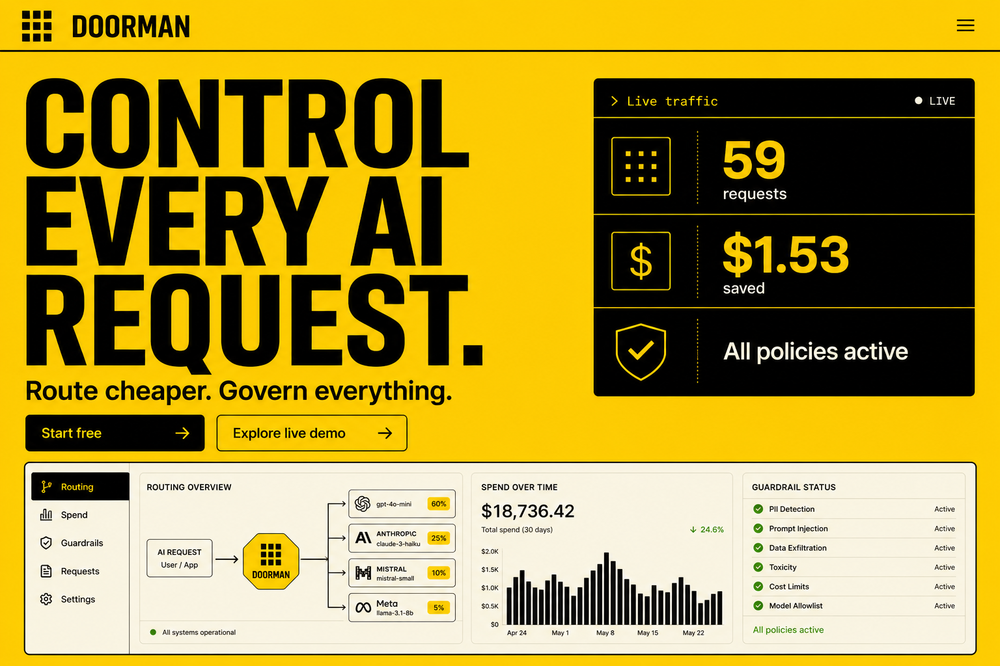
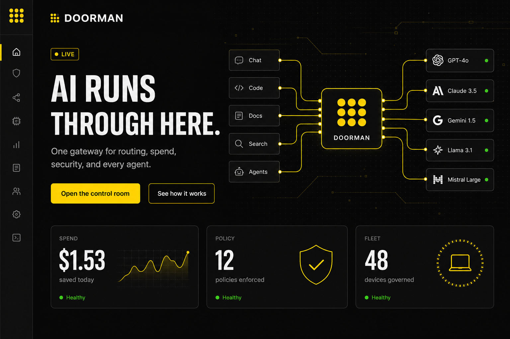
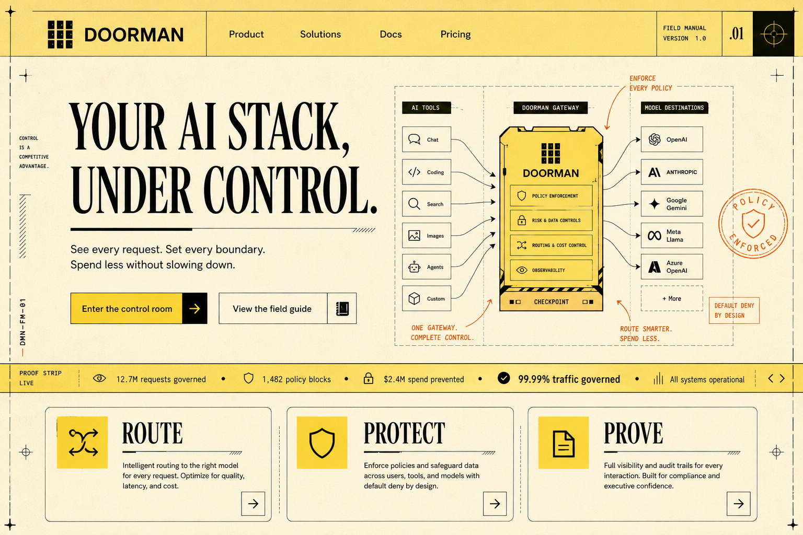
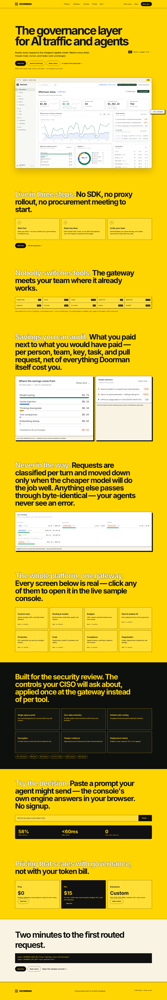

YELLOW, WITH RANGE
Four ways to make
AI governance unmissable.
Three original directions plus one precise Signal translation of the current showcase—built as responsive pages you can open, resize, and compare.

Signal
Maximum impact. Yellow owns the canvas; product proof lands immediately.
Open concept ↗
Night Shift
Enterprise control room energy, with yellow used as a live routing signal.
Open concept ↗
Field Manual
A warmer, more ownable system—technical authority without the usual SaaS gloss.
Open concept ↗
Signal × Showcase
The current landing page—same copy, restraint, and product rhythm—recast in yellow and black.
Open concept ↗